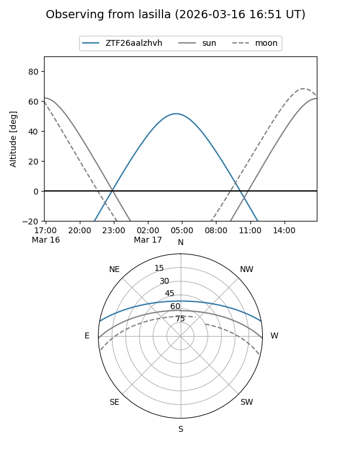
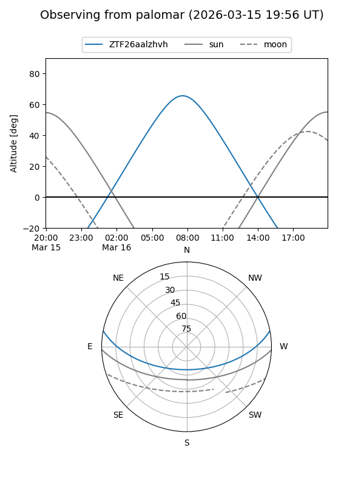

ZTF26aalzhvh
Target ZTF26aalzhvh at 2026-03-16 11:55
Aliases and brokers:
FINK: link
Lasair: link
ALeRCE: link
alt names
ZTF26aalzhvh (ztf,fink_ztf)
Coordinates:
equatorial (ra, dec) = 170.7975,+9.19352
equatorial (HMS+DMS) = 11:23:11.40,+09:11:36.67
galactic (l, b) = (249.4926,+62.50838)
Flags:
Photometry:
last ztfg=18.19
1 ztfg detections
Lightcurve
Visibility


Additional plots